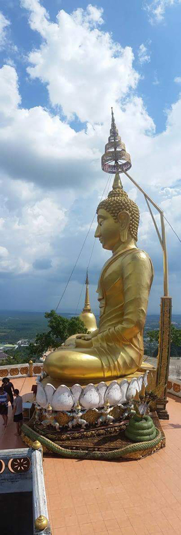
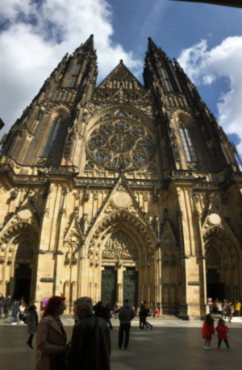

My Dream
My dream is simple. I want to experience living and working in the beauty of nature. The internet has always been a big part of my life and has allowed me to teach myself to program, a job I can do anywhere. I dream of a life where I can work on my computer from a house somewhere green, with lots of animals. I can grow vegetables, and play guitar under the stars. That would be my idea of paradise.
{kind=link}
10,000 step temple buddha, Krabi Island, Thailand
{kind=link}
Me and my travelling friends, Gdansk, Poland
{kind=link}
St. Vitus, Prague, Czechia
The Nomad Lifestyle
There are basically two halves to my life: home, and travelling. When I am home, I spend most of my times indoors working on a project, and don’t go out much. Over the summers, I travel and volunteer, and am around people all the time. I have just started travelling, and so far have also been to Israel, Mexico, Czechia, Poland, Germany, Thailand, and Japan.
{kind=link}
Me and my friend Domo, NHK studio, Tokyo, Japan
What I want to learn
I would like to learn how to become a freelancer and digital nomad. I know how to program, but the business side, such as getting clients, is something I am still learning. I hope this can be a foot in the door.
Skills
In addition to programming, I can play guitar and piano, and shoot and edit video. I am also a decent writer. I was a film major in college. I wrote scripts, designed sets and composed music for films. I do not know much about farming, but I used to go camping frequently when I was younger and I would like to learn more about growing food and living outside of the city..
{kind=link}